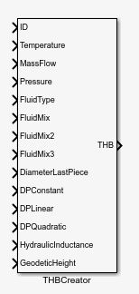
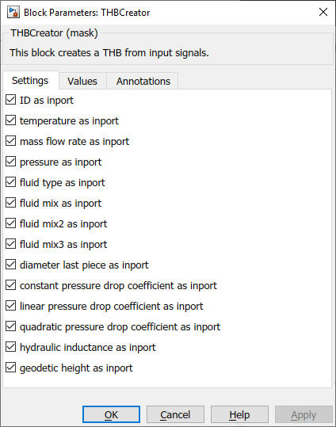
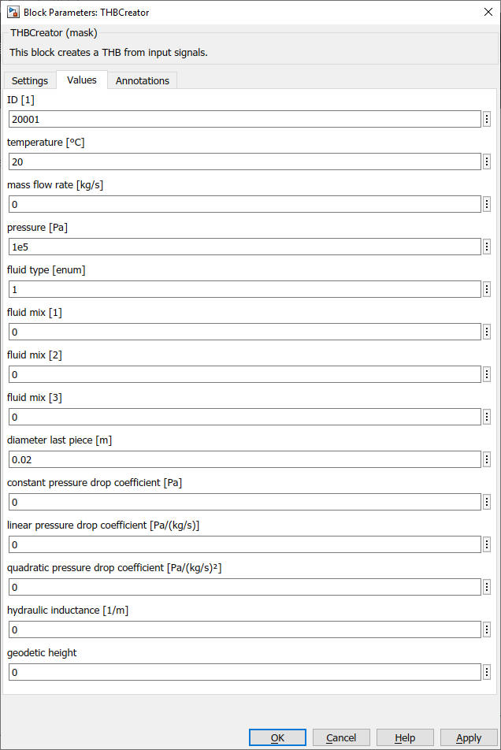

THBCreator

Path: CARNOT/Basic/Hydraulics
Purpose
Create a constant Thermo-Hydraulic
Bus
with variable inputs
Description
The output of the block is a Thermo-Hydraulic-Bus.
The values for the elements in the bus can be defined by a constant or an input
port.
Inputs: variable (the elements of THB)
Outputs: THB
Parameters and Dialog Box
All values are defined as inports:

Values which are not defined as inport can be set
to a constant value

Characteristics
Direct Feedthrough No
Sample
time
Inherited
from driving block
Vectorized
No